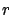

Siguiente: Ejemplos de aplicación
Subir: Algoritmos y cálculos implementados
Anterior: Algoritmo para la evaluación
Índice General
Algoritmo de búsqueda del perfil
Como se vio en la sección 5.4 es necesario encontrar el perfil
de alturas dada la ubicación del móvil y la base, y la disposición y
forma de las edificaciones presentes. Se entiende por perfil a un
conjunto de pantallas (semiplanos) paralelas entre el transmisor y
el receptor. Por lo tanto, éste queda completamente definido por la
altura de cada elemento del perfil (que incluye además de las
pantallas, el receptor y el transmisor) y la distancia entre ellos
(ver la figura 4.6 en la sección 4.3.1). Con
dicho perfil se calculará la integral de Vogler (sección
4.3.1) y se estimará el parámetro  del modelo de
Walfisch-Ikegami (sección 5.3) y MOPEM (sección 5.3.3).
Los edificios que serán tomados en cuenta para el perfil serán
únicamente aquellos que tengan alguna influencia no despreciable
en la atenuación, es decir, estén a menos de un determinado
porcentaje del primer radio de Fresnel de la línea que une el
transmisor y el receptor. Si se quieren únicamente aquellas
edificaciones que estén a menos del
del modelo de
Walfisch-Ikegami (sección 5.3) y MOPEM (sección 5.3.3).
Los edificios que serán tomados en cuenta para el perfil serán
únicamente aquellos que tengan alguna influencia no despreciable
en la atenuación, es decir, estén a menos de un determinado
porcentaje del primer radio de Fresnel de la línea que une el
transmisor y el receptor. Si se quieren únicamente aquellas
edificaciones que estén a menos del  % del primer radio de
Fresnel, se debe multiplicar el radio de la primera elipsoide de
Fresnel por el factor
y hallar la
elipsoide con este nuevo radio. Esto se deduce fácilmente de las
siguientes ecuaciones:
% del primer radio de
Fresnel, se debe multiplicar el radio de la primera elipsoide de
Fresnel por el factor
y hallar la
elipsoide con este nuevo radio. Esto se deduce fácilmente de las
siguientes ecuaciones:
donde  es el radio de la primera elipsoide de Fresnel.
Está claro que la altura de un elemento del perfil coincidirá con
su altura relativa respecto al terreno más la altura de dicho
terreno. Por lo tanto, identificados los elementos del perfil y
sus alturas, resta asignarles una posición dentro del mismo.
No existe consenso sobre como asignar posiciones dentro del perfil.
Por ejemplo, es muy utilizado ubicar la pantalla en el centro del
edificio [51]. Esta puede no ser la ubicación más
representativa, ya que puede suceder que sea una de las esquinas del
edificio la que intersectó al elipsoide. Tratando de evitar estos
casos, el algoritmo adoptado fue el siguiente. En la búsqueda de
aquellos edificios que intersectan en la primera elipsoide de
Fresnel reducida, se pueden hallar cuáles paredes del mismo son las
que intersectan al elipsoide. Se tomará el punto de la recta que une
el transmisor y el receptor que esté más cercano a dichas paredes y
se promediarán coordenada a coordenada. El resultado del promedio,
será el punto que se tome para ubicar la pantalla en el perfil.
Siguiente: Ejemplos de aplicación
Subir: Algoritmos y cálculos implementados
Anterior: Algoritmo para la evaluación
Índice General
SAPO